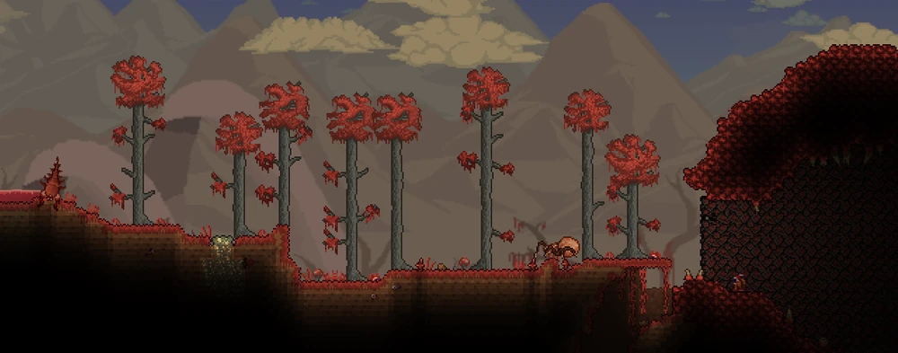
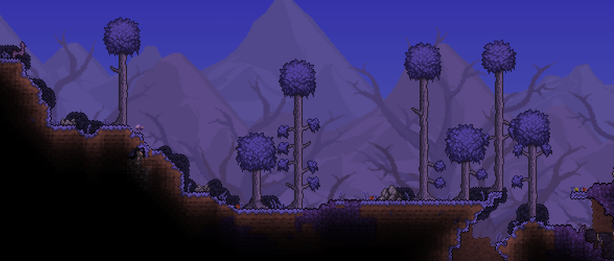

Bienvenido a la guía de Terraria para empezar desde cero :3
Aqui encontraras una guía rapida para iniciar en el juego independiente hecho por Redigit quien creo el juego de terraria, que por cierto ya casi son 12 años, espero que esta pequeña wiki te ayude en tu proxima aventura :D
Empezar¿Nuevo? es momento de la wiki.
Empieza por construir un refugio básico, excava para encontrar minerales y otros recursos. Descubre y crea hasta armas variadas: mágicas, a distancia y cuerpo a cuerpo, también armaduras, y úsalas para pelear contra cientos de enemigos distintos. Pronto te enfrentarás cara a cara contra una docena de enormes jefes. ¿Cómo es que lo harás eso? no te preocupes en esta guía encontraras lo necesario para poder avanzar en tu aventura ¡Adelante!
¡Comenzar!

